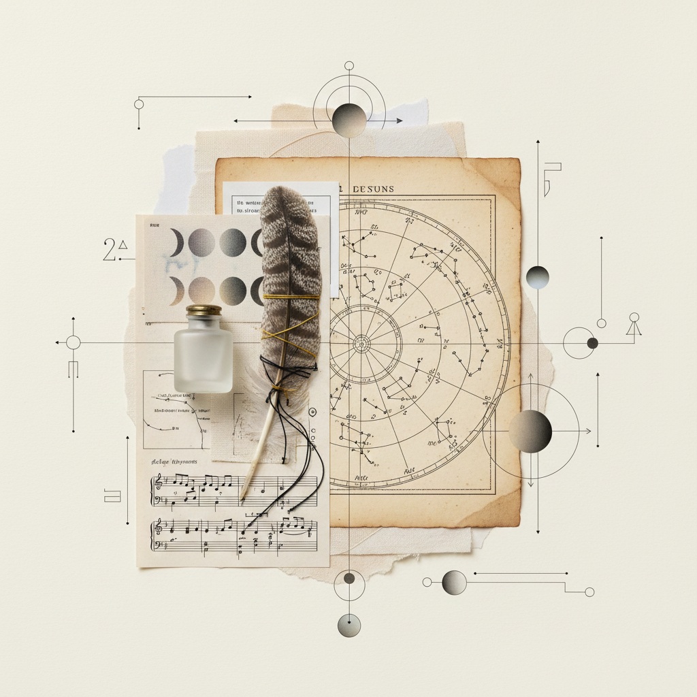
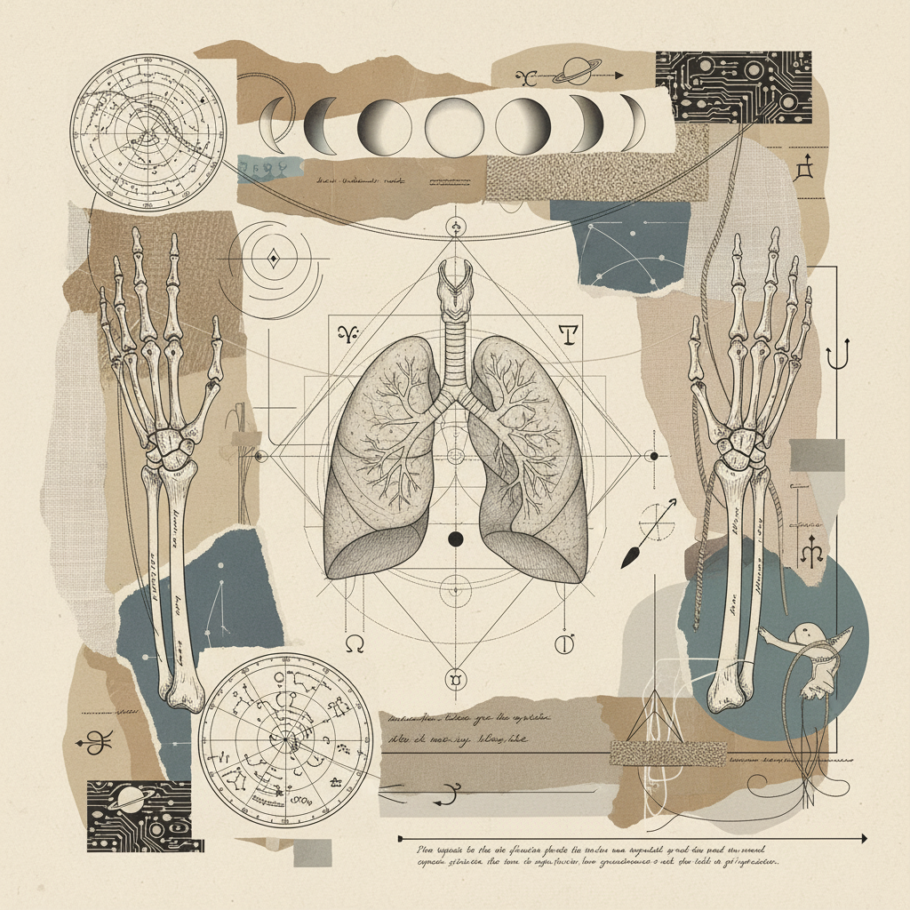

Vision Speaking Through Voice
The Grand Vision → Articulate Expression

"The journey from the expansive horizon of the archer to the rhythmic breath of the twin messengers requires the distillation of fire into air."
The Sagittarius to Gemini Axis
In this workbook, we examine the structural integrity required to transform philosophical expansiveness (Sagittarius) into local, communicable data (Gemini).
Hips & Thighs (Foundation)
The stability of the archer's stance. How does the pelvic weight support the upward trajectory of the word? Somatic exploration of the psoas as a bridge between earth and lungs.
Lungs & Arms (Vocalizing)
The bifurcation of breath. The twins represent the left and right lung, the hands that gesture as we speak. Mapping the neural pathway from visceral vision to spoken syntax.
The 14-Day Protocol
Silent Observation of the Horizon
Gathering the raw vision without naming it. Focus on the hip structure.
The Internal Translation
Moving from the core to the diaphragm. Humming rituals at dusk.
The Articulate Externalization
Gemini New Moon. Precise naming of the Sagittarian seeds. Journaling with ink.
Somatic Research Prompts
"Inhale into the space behind the pelvis. Feel the weight of your philosophy. As you exhale, let the sound travel through the central column to the tip of the tongue."
— Lunar Chaperone Log, Year 4
Measure the expansion of your ribcage while thinking of a 'Large Concept'.
Observe the tension in your thighs when you are interrupted mid-sentence.
